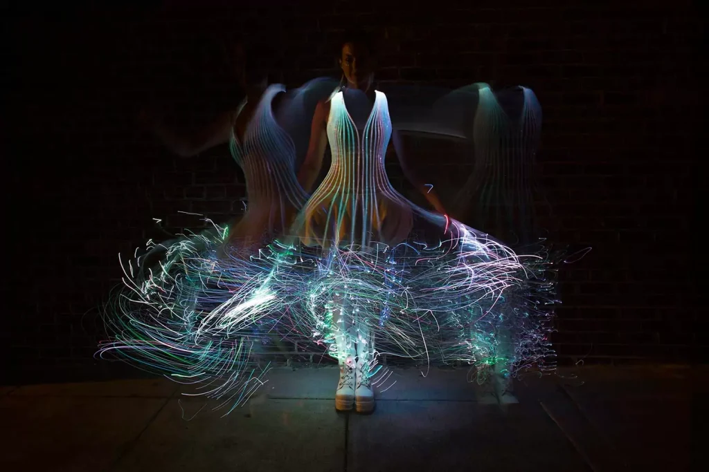

Optical Fiber in Optoelectronics
This week’s learning task I focused on the section about optical fiber in Chapter 5, Optoelectronics, from Practical Electronics for Inventors by Scherz and Monk (2013). As I read through the chapter, I concentrated on understanding how optical fibers work, the different types available, and their practical applications in both electronic engineering and interactive technologies.To better understand the transmission mode of optical signals, I also consulted practical cases and learned about how optical fibers are applied in sensing, communication, and art installations.

Fiber Optic Dress by Natalie Walsh (2014)
Through this week’s study, I have grasped some basic knowledge about the combination of optics and electronics. In particular, the principle of optical fiber (The mechanism of total internal reflection) has given me a deeper understanding of how light travels through a medium. I have learned that optical fibers are usually made of glass or plastic, and the outer layer is coated with a material that has a lower refractive index to ensure that the optical signal can be repeatedly reflected within the fiber without leakage.
At the technical level, I have understood the loss and bandwidth characteristics of optical fibers, as well as the differences between single-mode and multi-mode optical fibers. At the creative level, I have started to think about how to use optical fibers in the design of interactive installations. For example, by transmitting colour changes through optical fibers to simulate “flowing information”.
From the perspective of creative computing, optical fiber technology is not only an efficient medium for data transmission but also a means of expression. Its flexibility and controllability also enable it to have a wide range of applications in new media art. For instance, it can be embedded in clothes for interactive fashion design, or serve as a part of light sculptures.
More importantly, optical fiber is essentially a “sensing channel” – it can be used not only to transmit signals but also to sense environmental changes (such as changes in refractive index caused by temperature or pressure changes). These possibilities make me think about how to combine information transmission at the physical layer with creative expression, providing new media paths for future interactive works.
In general, this week’s study of optical fiber technology has allowed me to see the bridging role of light in electronic systems and creative interactions. Whether as a high-bandwidth data medium or a material that can combine physics and aesthetics, optical fibers have inspired me infinitely for future works. I hope that in the future, I can try to build an interactive installation using actual optical fiber materials. For example, it can change the colour transmitted in the optical fiber according to the sound frequency of the audience, achieving a “dialogue between light and sound”.
Reference
- Scherz, P. and Monk, S. (2013) Practical electronics for inventors. 3rd edn. New York: McGraw-Hill Education. Available at: https://learning-oreilly-com.soton.idm.oclc.org/library/view/practical-electronics-for/9781259587559/xhtml/16_Chapter_05.xhtml (Accessed: 29 January 2025).
- TechZone (2018) How does fiber optics work? [YouTube video]. Available at: https://www.youtube.com/watch?v=zAVsTubdd_Q (Accessed: 29 January 2025).
- Anderson, M. (2024) New Fiber Optics Tech Smashes Data Rate Record. IEEE Spectrum, 8 July. Available at: https://spectrum.ieee.org/fiber-optic-cable-record (Accessed: 29 January 2025). Image used from article.
- Walsh, N. (2014) Fiber Optic Dress. Available at: https://www.nataliewalsh.com/portfolio/fiber-optic-dress/ (Accessed: 29 January 2025).